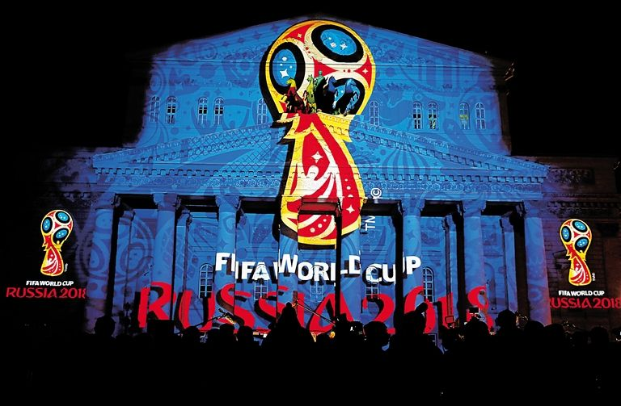

俄罗斯于2010年12月赢得2018年足球世界杯的举办权，赛事预算超过200亿美元。
俄罗斯总统普京2014年7月11日即将启程前往拉美国家进行访问，他在出发前夕接受俄罗斯媒体采访时说，俄罗斯2014年成功地举办了索契冬奥会和冬残奥会，这证明了俄罗斯有能力办好大型赛事。2018年世界杯期间，俄罗斯将对球迷以及赛事参与者实行免签证制度。
“在某些问题上，俄罗斯想要比2014年世界杯东道主准备的更充分一些。所以，我们已经巩固了联邦法律的特别签证制度，帮助那些准备参与2018年世界杯的外国朋友们，不仅仅针对赛会的正式参与者—运动员、教练以及其他人员，而且球迷们也可以享受免签证制度，来俄罗斯看球、支持他们的球队”。普京还指出，这样的先例在世界杯的历史上是找不到的。
